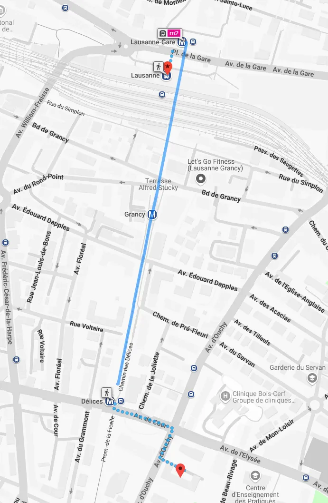

Accès au club
Vous trouverez ci-dessous le chemin pour accèder au club depuis la gare de lausanne.
Chemin à emprunter :
Depuis la gare de lausanne dirigez-vous vers le metro M2 direction Ouchy olympique.
Sortez à l'arrêt Délices
Allez ensuite en direction du collège de la croix d'Ouchy et vous serez arrivé sur place.
